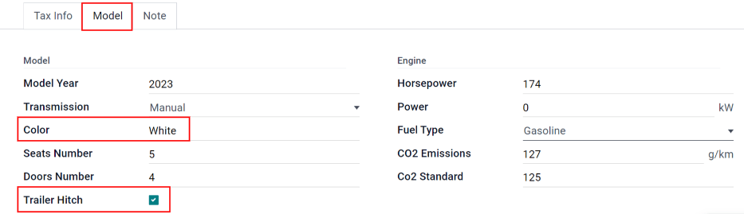

Crear nuevos vehículos¶
La aplicación Flota de Odoo gestiona todos los vehículos y los documentos que acompañan al mantenimiento del vehículo y los registros del conductor.
Todos los vehículos están organizados en el tablero principal de Flota. Cada vehículo cuenta con su propio formulario de vehículo y aparece como una tarjeta en la vista de kanban según su estado y aparece en la etapa correspondiente actual. Las etapas predeterminadas son Nueva solicitud, Por ordenar, Ordenado, Registrado, Degradado, Reserva y Lista de espera.
Para agregar un nuevo vehículo a la flota haga clic en el botón Nuevo. Esta acción abrirá un formulario de vehículo en blanco, complete los campos con la información correspondiente y luego haga clic en Guardar.
Campos del formulario de vehículo¶
Modelo: seleccione el modelo del vehículo con el menú desplegable. Si el modelo no aparece en la lista, escriba el nombre del modelo y haga clic en Crear o Crear y editar.
Matrícula: ingrese el número de matrícula del vehículo en este campo.
Etiquetas: seleccione las etiquetas en el menú desplegable o escriba una nueva. Puede seleccionar la cantidad de etiquetas que desee.
Nota
El modelo es el único campo obligatorio en el formulario del nuevo vehículo. Al seleccionar un modelo aparecerán otros campos en el formulario y la información correspondiente completará los campos relacionados con el modelo de forma automática. Si algunos de los campos no aparecen, podría ser indicio de que no seleccionó ningún modelo.
Sección sobre el conductor¶
Esta sección del formulario del vehículo está relacionada con la persona que en este momento conduce el automóvil, así como cualquier cambio futuro de conductor y cuándo ocurrirá.
Conductor: seleccione al conductor en el menú desplegable o escriba un nuevo conductor y haga clic en Crear o Crear y editar.
Tarjeta de movilidad: el número de la tarjeta de movilidad del conductor seleccionado aparecerá en este campo si tiene una tarjeta de movilidad registrada en su tarjeta de empleado en la aplicación Empleados. Si no hay ninguna tarjeta de movilidad registrada y desea agregar una deberá editar la tarjeta del empleado en la aplicación Empleados.
Próximo conductor: si conoce al próximo conductor del vehículo selecciónelo en el menú desplegable o escriba el nombre del siguiente conductor y haga clic en Crear o Crear y editar.
Plan para cambiar de automóvil: marque esta casilla si el conductor actual asignado a este vehículo tiene planes de cambiar de vehículo porque está en espera de un nuevo vehículo o porque se trata de una asignación temporal y sabe cuál será el próximo vehículo que conducirá. Si el conductor actual no tiene planes de cambiar de vehículo y utilizará este, no marque la casilla.
Fecha de asignación: con el calendario desplegable seleccione la fecha en la que el vehículo estará disponible para otro conductor. Para elegir la fecha vaya al mes y año correctos con los iconos ⬅️ (flecha izquierda) y ➡️ (flecha derecha), luego haga clic en el día específico. Si el campo está vacío, eso indica que el vehículo está disponible por el momento y que puede asignarlo a otro conductor. Si el campo cuenta con información no podrá asignar el vehículo a otro conductor hasta la fecha que aparece en el campo.
Importante
Un conductor no tiene que ser un empleado, pero sí debe estar registrado en la aplicación Contactos. Cuando crea un nuevo conductor este se agrega a la aplicación Contactos, no a Empleados.
Sección sobre el vehículo¶
Esta sección del formulario del vehículo está relacionada con el vehículo físico, sus distintas propiedades, cuándo se agregó, dónde se encuentra y quién lo administra.
Fecha de registro vehicular: seleccione la fecha de adquisición del vehículo con el calendario desplegable.
Fecha de cancelación: con el calendario desplegable seleccione la fecha en que vencerá el alquiler del vehículo o la fecha en la que el vehículo ya no estará disponible.
Número de chasis: escriba el número de chasis en este campo. En algunos países, a esto se le conoce como el VIN o NIV.
Último odómetro: proporcione la última lectura conocida del odómetro en el campo numérico. Con el menú desplegable ubicado junto al campo numérico seleccione si la lectura del odómetro está en kilómetros (km) o en millas (mi).
Gerente de flota: seleccione al gerente de la flota desde el menú desplegable o escriba uno nuevo y haga clic en Crear o en Crear y editar.
Ubicación: escriba la ubicación del vehículo en este campo, el escenario más común para completarlo es cuando una empresa tiene varias oficinas. La ubicación habitual de la oficina donde se encuentra el vehículo debería ser la ubicación que proporcione.
Empresa: seleccione la empresa en la que utilizará y a la que asociará el vehículo desde el menú desplegable o escriba una nueva empresa y haga clic en Crear o en Crear y editar.
Importante
Crear una nueva empresa puede ocasionar un cambio en el precio de la suscripción según el plan actual. Consulte el plan de precios de Odoo para obtener más información.
Pestaña de información fiscal¶
Fiscalidad¶
Impuestos sobre caballos de fuerza: proporcione el importe gravado en función del tamaño del motor del vehículo. Esto se determina a través de los impuestos y regulaciones locales, además varía según la ubicación. Le recomendamos que consulte a su departamento de contabilidad para asegurarse de que el valor es correcto.
Tasa de gastos rechazados: este es el importe correspondiente a los gastos no deducibles del vehículo. No se contabiliza para ninguna deducción en una declaración de impuestos o para un gasto permitido al calcular el ingreso gravable. Le recomendamos que consulte a su departamento de contabilidad para asegurarse de que los valores introducidos son correctos.
Fecha de inicio: ingrese la fecha de inicio y el porcentaje (%) para cuando el valor de tasa de gastos rechazados entre en vigencia. Haga clic en Agregar una línea para proporcionar una fecha. Haga clic en la línea vacía para que aparezca el calendario y seleccione una fecha, seleccione el mes y año correctos con los iconos ⬅️ (flecha izquierda) y ➡️ (flecha derecha), luego haga clic en el día específico. Ingrese el porcentaje rechazado en el campo % (porcentaje) que está ubicado a la derecha de la fecha. Proporcione el porcentaje en un formato XX.XX. Repita esto para todas las entradas necesarias.
Contrato¶
Fecha del primer contrato: con el calendario desplegable seleccione la fecha de inicio del primer contrato del vehículo. Por lo general es el día en que lo compró o alquiló.
Valor del catálogo (IVA incluido): proporcione el precio de venta sugerido del vehículo por el fabricante en el momento de la compra o el alquiler.
Valor de compra: proporcione el precio de compra o el valor del alquiler del vehículo.
Valor residual: escriba el valor actual del vehículo.
Nota
Los valores que se mencionan arriba influirán en el departamento de contabilidad. Le recomendamos que verifique todo con su equipo contable para obtener más información o asistencia relacionada con estos valores.
Pestaña de modelo¶
Si el modelo del nuevo vehículo ya está configurado en la base de datos, entonces la pestaña Modelo se completará con la información correspondiente. Si el modelo aún no está en la base de datos y debe configurar la pestaña Modelo, entonces configure el modelo del nuevo vehículo.
Verifique la información en la pestaña Modelo para comprobar que es correcta. Algunos de los ejemplos de la información que puede necesitar una actualización son el color del vehículo o si hay un enganche de remolque instalado.
Pestaña de nota¶
Escriba cualquier nota relacionada con el vehículo en esta sección.